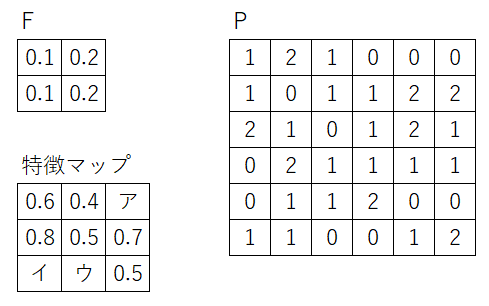

58.以下のフィルタＦと画像Ｐによる畳み込み演算を行い、特徴マップの空欄に当てはまる数値を選べ。
ただしストライドは2とする。

|
A. 0.4 B. 0.5 C. 0.6 D. 0.7 E. 0.8 |
答え Ｃ、Ｂ、Ｂ
【解説】
| 畳み込み演算を実際に行う問題です。 「フィルタを画像に重ねて積和演算」をし、特徴マップの各画素値が得られます。 ストライドは、フィルタを移動させる刻みのことであり、この言葉の意味も理解しておきましょう。 （ア）＝0×0.1＋0×0.2＋2×0.1＋2×0.2＝0＋0＋0.2＋0.4＝0.6（ア＝Ｃ） （イ）＝0×0.1＋1×0.2＋1×0.1＋1×0.2＝0＋0.2＋0.1＋0.2＝0.5（イ＝Ｂ） （ウ）＝1×0.2＋2×0.2＋0×0.1＋0×0.2＝0.1＋0.4＋0＋0＝0.5（ウ＝Ｂ） |
 戻る
戻る 一覧へ
一覧へ